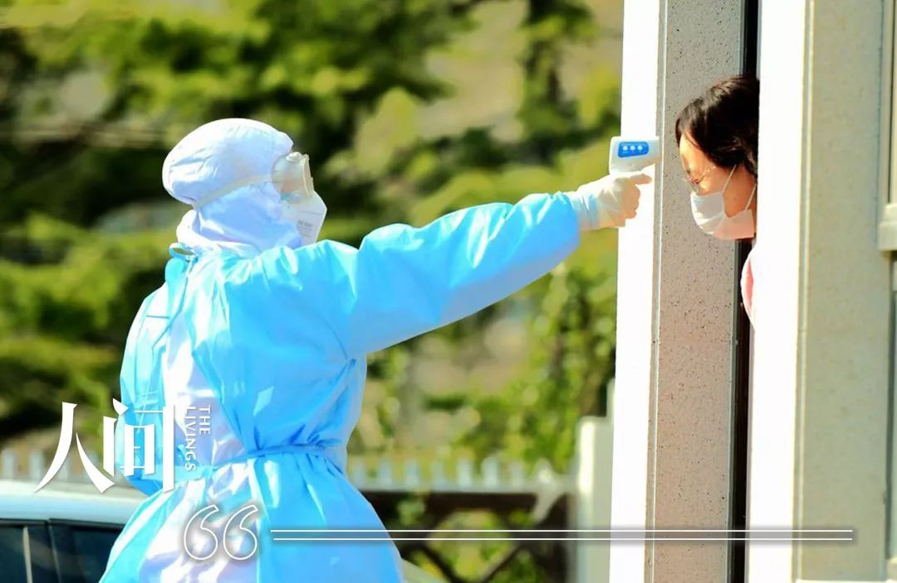

武汉医生患病后自己诊治、隔离：我们的麻醉师插管没有护目镜，就用泳镜
原文链接 备份链接 希望情况尽快能得到改善 武汉医院现在防护服短缺，一线医护人员不敢吃饭、喝水、上厕所，因为医用防护服是一次性的，一旦脱下就要换新的。 本刊记者/周群峰 摄 近日来，网上有关于武汉市医务人员被感染的消息出现。武汉市某三甲医 …


几天的超负荷工作，一批同事陆续累病了，院长要求他们待岗休息，再缺人手，也不鼓励带病工作。休假后从外地赶回来正居家隔离的医生护士，未经过疫区的，都解除隔离提前上岗，顶替倒下的人。
有同事笑称：“这就叫前仆后继……”

配图 | Sipa图片社
前 言

这是一场战争，在新年的伊始，爆发在每一个普通的、平凡的中国人身边。
这是我们的战争，我们热切地讨论、谨慎地分析，为灾难中陨落的生命而痛惜，为医者大无畏的精神所感动，为我们能为之所做的点滴小事而不懈努力。
人生海海，我们且行且惜。
网易人间「我们的战争」特辑，讲述每一天，我们与疫情赤膊相见。
我们的战争丨连载11
元旦假期，睡到自然醒的我躺在被窝里刷微信，看见武汉的一个媒体朋友发状态：“2020第一天，武汉成了‘沸点’。我们永远无法预估明天，少凑热闹戴好口罩调节情绪按时作息科学预防，武汉会很安全。”
我心里咯噔一声，上网搜索，只看到零星几条关于武汉不明原因肺炎的消息，说是与海鲜市场相关。
“可别再像那年‘非典’似的。”给老公念完消息，我嘀咕。
他心不在焉地嘲笑：“挣着卖白菜的钱却操卖白粉的心，你省省吧！”
“这不就在家里说说嘛，干嘛连讽刺带打击的？”
他立马正经起来：“再来一次‘非典’我也不用担惊受怕了。你这回是在后方，不用直接往上冲了吧？”
17年前SARS肆虐时，我还是战斗在临床一线的内科护士。虽然我们这地处东北犄角旮旯的十八线小城最终也没有确诊一例SARS患者，但防控的风声鹤唳，至今记忆犹新，那时值守发热门诊或是预检分诊，便如上了战场，因为不知道哪一位来就医的病人可能携带着病毒“炸弹”。偏偏在我值守发热门诊时碰到了一例“疑似病例”，按要求生生被隔离了一周，弄得家里人忧心忡忡，食不甘味、寝难安眠。直到那个病人被排除疑似，我才回家重见亲人。那过山车一般的心情起伏，犹如经历了生离死别一般。
如今，我算是“二线”行勤科室中层领导，每天参与行勤早会和领导班子会议，职务只是辅助性质，一般开会，我只噤声做会议记录。
上班后，责任使然，感控科的同事在早会上提起，“武汉出现不明原因肺炎”，院长便指示他们多加关注，提早防范。
一晃儿到了1月20日的早会，武汉的疫情已通报全国，叶副院长传达省卫健委电视电话会议精神，要求立即落实新型冠状病毒肺炎的防控。张院长随后部署工作：马上开启发热门诊，出诊医护人员二级防护，发热病人做好流调登记（流行病学调查），其他科室所有医务人员一律佩戴口罩上岗。
医务科、护理部、感控科等与防控相关的行勤部门领导记录了工作要求，马上分头去落实，剩下的领导班子成员继续开会，研究了一下节前安全检查之类的日常工作，还评价了上周五的本院春晚节目，气氛轻松愉悦。
下午，全院中层领导例会，强调节日期间医护保障和医疗安全、消防安全，也强调了疫情防控。当晚，早已提前买好机票的叶副院长飞往大连的儿子那里，去阖家团聚。他已经连续几年奉献了年假，作为呼吸内科专家，本来提出了退票“留守”，但院长说：“走吧，我替你值发热门诊。”
谁都没有想到，后面的防控形势发展得那么快。

1月21日早会交班，夜间总值班报告：预检分诊护士共导引6名体温高于37度5的患者前往发热门诊，其中2人拒绝佩戴口罩，家属也骂骂咧咧，嫌护士“脱裤子放屁多此一举”。保安出面，才算把他们请出急诊科，送到了楼外隔离区的发热门诊。
院长指示：“无论多难，也要坚持预检分诊原则，对患者做好解释，防控工作千万不能大意，要外松内紧，以免引起社会恐慌。”
这时全院上下氛围还算好，医院计划春节时要在微信公号上祝全市人民新春快乐、幸福安康，各科室工作之余，正群策群力、绞尽脑汁地拍拜年视频，有的科室为此还提前贴出春联。
我也出门去往江畔广场，想看看单位小年夜展出的花灯，是否像广告公司承诺的那样“闪亮全场艳压群芳”。临走前，我带上了刚刚给行勤科室派发的医用口罩，街上节日气氛浓烈，人流摩肩接踵，一派祥和喜庆，就算偶尔看见几个戴口罩的，也是防寒的，我脸上的淡蓝色，很是另类。
出了门就是药店，我走进去，又买了几样口罩，3M、N95、医用的，一样一大包。我还不知道20天前的乌鸦嘴一语成谶，只是想着就算预防感冒，储备点口罩也理所应当——周围都是买药的人，没见谁买口罩。
晚上，我在自己和老公的两个亲人群里，劝告大家勤洗手、多通风，少去公共场所，不得不去就戴上口罩，结果应者寥寥。从医院退休的大姑姐发了句：“莫怕，过度恐慌也降低免疫力。”70岁舅舅用语音说：“没事儿，抗‘非典’时我就没戴口罩，咱这疙瘩儿是风水宝地，‘非典’时都没有病人，这次也不会有。”
舅舅的说法很有代表性，朋友圈里我也瞧见了一些盲目乐观的“宝地赞”——“这辈子哪也不用去了，就在咱这儿混了！1998年洪水，咱这儿没事；2003年非典，咱这儿没事；2006年禽流感，咱这儿没事；2008年大地震，咱这儿没事；2013年H7N9，咱这儿还没事。上有天堂，下有苏杭，若论躲灾，咱这儿最强！”

1月22日刚好轮到我串休，开车回老家给过世的长辈们上坟，祭拜完毕已是下午，村里的亲戚招待吃饭。
刚上桌，同事微信里喊我：“主任，咱今天的活动发不发公号？”
我问：“今天都做啥了？”
她发来一些照片，小会议室的横屏、大会议室主席台的背景大屏、示教室的投影屏上分别写着会标：“新型冠状病毒肺炎防控工作部署”、“新型冠状病毒肺炎诊疗方案培训”、“正确穿脱隔离服实战演练”。
我看得出来，小会议室是中层领导在开会，大会议室坐满了全院医生护士，演示教室组织实战演练的是护理部，连党员活动室里，部分非医学背景的党员都在学习《公共卫生事件应急预案》。
照片里所有的同事们都戴着口罩，我暗暗吃了一惊：医院里竟然忙成了这样？
“请示院长了吗？”我问。
“上午还能看见院长，会议、培训、演练也都是各主管副院长组织的，下午所有领导就都不在了，说是开会去了。”
我给院长打电话请示，他说先缓缓。挂了电话，我才看见新闻上说，“截至昨晚24时，国家卫健委发布13个省区市累计报告新型冠状病毒感染的肺炎病例已有440例，还有15名医护人员被感染”。
我不由脱口惊叹。
一桌子微醺的亲人纷纷嘲笑我小题大做：“14亿人才有400多得病的，算啥大事啊？”
隔行如隔山，我懒得浪费口舌，急道：“快点吃，我得赶紧回去！”
“急啥？好不容易聚一起喝点酒……”
连老公都瞪我：“你不是串休一天的吗？”
回程时天已经擦黑，行至半途，办公室主任电召：“姐，到家了吗？院长让你来开紧急会议。”
我说“1小时后能到”，他去请示后，又说“院长说你不用来了”。
放下电话，我在车里严正警告各位亲人必须马上采取防护措施，苦口婆心终于换来喏喏连声：“行行行，我们下车就去买口罩买消毒液，行了吧？”
进城后先将3个亲人撂下，还没等我们的车到家，他们的电话就又来了，都说口罩已经脱销，原本满不在乎的语气，变得紧张兮兮：“这可咋办呀？”
1月23日一大早，我就赶去医院参加早会。
院长说：“昨晚大家也听到区委书记表态了，无条件保障防控工作，已经拨款给咱院购置负压救护车、移动数字X光机和防护用品。特事特办，不走审批和招投标程序……”
我这才明白，原来昨晚的紧急会议，是区委书记亲自来督导部署工作。院长神情中透着兴奋，大家也互相交换着欣喜的眼神，谁都没有说破——太好了，要知道平时若想添置诊疗设备，就得争取财政拨款，使出九牛二虎之力，也不见得如愿。
听着相关科室汇报工作进展，我才知道昨晚大家通宵达旦，已经将防控预案进一步细化，切合本院实际的制度、流程、操作指南已经出台。我暗自惭愧，散会后急忙回到办公室，开始自己的本职工作，撰写倡议书。
半小时后，我把《让党旗在防控前线高高飘扬》的短文发到党员群里，医院里65名党员纷纷响应：“冲上前线，义不容辞！”“哪里需要去哪里，时刻听从党召唤！”医院员工大群内，随即也出现了“春节期间随叫随到”的报名接龙，短短两小时，报名的就有300余人。我的眼泪一下就掉下来了——我们的医生护士平时可能也会斤斤计较，但在大事儿上真不含糊呀。
下午4点，医院再次临时召集中层领导开会，召集人只剩下孙副院长。
匆匆赶来的科主任、护士长们一落座就交流着手机新闻里已经增长到600多确诊病例和武汉封城的消息——大家都窃窃私语：我们虽然与武汉远隔几千公里，但如今的交通可比SARS时发达多了，又值春运，病毒传播起来，后果可想而知。
还有人压低嗓音说：“知道吗？上午出发热门诊的王大夫和赵护士被隔离了，一个重庆回来过年的发热病人，高度疑似……”
立即有人惊呼：“我X，这下别想回家过年了！‘非典’时接触疑似病例的人被隔离了一周才放出来，这回要再（隔离）一周，正好过完大年初五。”
嘤嘤嗡嗡的议论充斥了会议室，孙副院长扯开嗓门喊：“都别说了，都听我说——院长们分头在市里、区里开会呢（市区同城），留我在家坐阵，他们现在听到有关医院的指示就打电话回来让我立即落实。下面我给大家分分工啊……”
我像以往开会一样，赶紧做记录，忽然听她说：“吕主任，按照上级要求，咱院凡是人流通道都要设预检分诊岗了，不只就诊病人，凡是进入医院的人员都要测温，体温超过37度的立即送往发热门诊筛查，一个也不能漏——这事儿你就抓起来吧！”
我下意识地反问：“预检分诊？”——其实我没有推脱的意思，只是以为自己听错了，毕竟，预检分诊原则上应该业务科室安排，而我现在只管行勤工作。
她大概因为我在抗拒，有点急头白脸：“现在大量工作都压给医务科，他们肯定是忙不过来了，不能再压担子了，你作为院领导，多分担一些吧，就这么定了。”
所有人的目光都投向我，我意识到这不是辩白无关问题的时候，赶紧表态：“没问题，我责无旁贷！”
孙副院长继续按人头落实责任，领到任务的同事都留下来探讨工作细节。明天就是除夕，家在外地的医生、护士大都离院了，人手紧张是个大问题。
孙副院长说：“叶院看到网上报道就购买回程机票，现在正往回飞呢，还有医生感受到形势严峻，也主动退掉了回老家的机票、车票。我相信会有更多的人放弃休假回到岗位的。”

散会时已近晚上6点，我赶紧要来一份全院员工名单，以行勤科室为主，安排预检分诊岗——毕竟，临床科室在日常救护之外还要轮值发热门诊，行勤可以暂时放下其他工作，临床却不能放下其他患者。
行勤员工只有40多人，还要把医务科、护理部、感控科这些时时领导防控工作的科室刨除在外。大年三十到正月初三，医院保留2条通道，每天3班、每班2人，各8小时轮流值守，初四开大门诊，多加1条通道，初七正常上班，通道会增加到5条……我脑筋高速飞转，里面的算盘劈啪作响——要平衡每人值班数量，每个人的班次不能过密，要避免与各自的节日带班相冲突，要把除夕年夜饭的时段留给自己，还要带头多值班。
刚有点思路，张院长和两位副院长各自从市里和区里的会议返回，立即又要碰头，传达上级领导的指示精神。
晚上8点，办公室买来泡面、榨菜，大家边吃边说，布置完，各自端着碗面回办公室分头工作。外联部主任见我还在排班，主动提出，帮我把预检分诊岗位的防护用品领出来、发下去。老公和儿子先后打电话过来，我挂断改成静音，匆匆在微信上告知：“加班，勿扰。”
一个半小时后，我把排班表发到行勤的工作群，要求大家“立即回复，无复电扰”。不到5分钟，群里一串“OK”的手势，没有任何人提出异议。
我长出一口气，捶打着酸痛的肩膀在走廊里踱步，各个办公室依然灯火通明。踱到院长办公室门口，埋头打字的他瞧见我，顺口问：“吕姐，吃了吗？”
“吃了。我的工作完成了，可以走吗？”
“走吧，好好歇下，硬仗还在后面呢。”他说。
到家停车进库，手机屏亮了。接起来，一个朋友问：“听说你们医院发现这病了？”
“没有，1例疑似，已经排除了。”我说。
这得感谢现在的诊疗技术，真是比SARS那年先进多了。有了快速检测的试剂盒，地级市已经可以自行检测（确诊首例还需国家认证）。下午我们提到的那例疑似病例，刚刚上报，疾控中心就来进行咽拭子取样检测，才4个多小时，结果就出来了：阴性。
当然，隔天还要做核酸检测再行确诊，但结合其他诊查结果，已经能够排除新冠肺炎。那两个被隔离的同事，终于可以回家过年了。
“外面都在传有这病了，真是吓死了。”朋友心有余悸。
边上楼边翻手机，居然20多个未接来电，估计全问这事儿的。一进屋，我立即群发消息：二院目前没有疑似病例。
老公过来问长问短，得知我要轮值预检分诊岗，立即火冒三丈：“你刚刚手术几天啊？还没能正常吃饭呢！吃不好饭就没有抵抗力你不知道啊？不要命了？”
一周前，我做掉了胃里和肠道里的十几个小息肉，为了省事儿省钱，走的同事的后门儿。操作的医生没让我住院已经违反了常规，除了喋喋不休叮嘱注意事项，还让我保密。术后赶上周末，躺了两天，隐隐的胃痛和腹痛就消失了，但一吃饭胃里就不舒服，所以一直顿顿喝粥。老公气得打电话跟儿子告状，同住一个小区的儿子儿媳立即回家加入声讨队伍。
我打开单位的微信群：“看看，大家都要往前冲，我能退后一步说我不行？”
他们仨轮流看了看群消息，都不吭气了。
临睡前又刷了会儿手机，小区群里的邻居们正七嘴八舌议论，又有消息灵通的发语音说：“二院今天确诊了1个新冠肺炎，已经被救护车送往省里了……谁跟他喝酒了还不得遭殃啊？喝酒那人的邻居、朋友、同事啥的，也保不齐得染上，这要人传人传下去，太XX吓人了！”
我赶紧辟谣：“我就在二院工作，二院没有确诊病人！”
“真的假的呀？”群里飘起一片问号，不仅质疑我信息的可靠性，还质疑起我的身份。我累得懒得理他们，搜了一个“危难时刻莫信谣莫传谣”的文章发了回去。结果，群里一片骂声，说我“显大眼儿”。

除夕一大早，我便被鞭炮声惊醒。人在被窝里心下稍微犹豫：今天下午要值预检分诊岗，上午就歇了吧？又一转念，不成，自己不只是值班者，还得把值班的事儿抓起来。
按正常上班时间抵达医院，急诊进门处已经摆好了预检分诊台。两位穿戴得看不出庐山真面目的同事站在桌后，其中一人促狭地喊我：“同志您好，请您配合测一下体温！”
我凑过去笑问：“缺啥少啥吗？千万注意个人防护。”
“两箱子手术衣和帽子手套都在保卫科呢，告诉我们每人1件手术衣，要重复使用，口罩也不能4小时一换——这也不符合防护规定啊？”一人指了指身后空空的房间。
“没办法，防护用品短缺，器械科昨晚联系供应商都说没货。现在没有疑似病人，只能先这样对付着，有疑似了，再按二级标准防护。”我解释。
“口罩只有3包，要是按流程检出发热病人就给戴口罩，连同陪护也得给，不知能用多长时间。”她又说。
我一听，急了：“怎么会只有3包？昨天领了10包200个，外联部帮着送到保卫科的，怎么会一夜用掉140个？”
同事也急了：“这我可不知道啊，我也是刚来，夜班保安就交给我3包！”
她边说边走进屋内，示意我跟她清点，然后又是一声惊叫：“咦，这一会儿功夫怎么就剩两包了？”
我俩把两大箱东西全掏了出来，再一一清点放回——没错，97件隔离衣、帽，97副乳胶手套，2瓶手消毒凝胶，2包医用外科口罩，其中有包还是拆开的，少了3个——是昨晚保安和今晨两个值班同事用掉的。
同事气得大骂：“谁这么不要脸？转身的功夫就偷走了1包？”
保安听见，在门口探了下头：“我这接了班儿刚要去巡视呢，我可没看见啊！”见我沉着脸，又小心翼翼道：“咱们这屋门总开着，人来人往的，不定谁路过看见口罩了，现在口罩可是紧俏货。”
防火防盗的保卫科居然让自己的值班室大敞四开——我忍了又忍，才没提“调取监控”。保安都是外聘的，也不归我管，大过年的，别给人添堵了。但我自己心里堵得慌：昨晚想这想那，咋就没想到设计一下交接班方案？亡羊补牢吧！得马上领取足够假期用的口罩。
给器械科主任打电话，他说他正跟库管一起忙活呢。一听说是给预检分诊岗调拨口罩，立马拒绝：“不能再领了，昨天刚领走200个，怎么还来要？口罩库存不多，采购又进不来，都给你了，别人怎么办？都像你那样，两天就没有用的了。”
“我哪样了？”我有点气急败坏——听他语气，分明怀疑我监守自盗。我明白，肯定是有人监守自盗，但我没证据，也不敢乱说。
器械科主任忙活着给别人发东西，不搭理我。我恨恨地站在旁边生了会儿闷气，见他一边发物品一边解释防护用品短缺、叮嘱大家别浪费，又释然了。巧妇难为无米之炊，该要的、不该要的都来找他，他能不急？
错就错在我没经验。
回办公室，设计了一份清晰明确、一目了然的物品交接班表格，然后就去找院长，想检讨昨晚的疏忽，请他协调一下，再去请领口罩。走到半路，器械科主任忽然截住我，塞过来一个大包：“200个啊，这回你可看好喽。”
这么快给我平反昭雪？见我冲他翻白眼，他略带窘迫地笑：“这一天天的，翻蹄撩掌干嘴仗！就为了当个好管家，人都让我得罪光了！”
我立马消了气儿，也笑：“是我没管好——这回，我每岗只发20个，多余的都收起来，让各班用1个就记1个消耗，交接班认双签字，哪班少了哪班负责。”
“20个？”他睁大眼睛，“那你还过不过年了？随时过来给补充啊？”
“补充呗，随叫随到！昨晚就不该放外面那么多。”
“你这是矫枉过正。”
正说着，刚才清点口罩的同事的电话打过来了：“主任，你说奇不奇？刚丢的那包口罩又回来了！”
愣了一下，我调侃：“真奇！疫情一来，口罩都长翅膀了！”

忙活到中午，回家躺了会儿。老公去陪我老爹打麻将了，儿子儿媳被我撵到了亲家那里，并叮嘱他们近期不许回家。万一小城“沦陷”，我就是危险的传染源，都要在家自我隔离。
下午回医院接班，在住院大楼进门处值守。白服之外套上一层一次性手术衣，戴好帽子、口罩、手套。
大过年的，人流明显减少。室外气温零下15度，是一天里最暖和的时段。进来的人带着寒气，体温枪不能对着脑门，得让人挽起袖子，测量衣袖遮盖的前臂内侧。即便这样，温枪有时也显示温度过低，只能让人等一会儿，暖和暖和再测。我们客气了再客气，一直担心像前几天晚上急诊预检报告的那样不被病人理解。
进来的人看见武装到头发丝的我们，多是一怔，但马上就明白是怎么回事，不待招呼就走过来，隔着桌子微微探进身体，主动把额头迎向“枪口”，让挽袖口就挽袖口，让等一会儿就等一会儿，大都非常配合——形势一紧张，老百姓的思想觉悟明显提升，估计未来一段时间医闹也会明显减少。有陪护的人反复进出，测过了也主动再测：“我害怕呀，这要得上了可咋整？”
下午三四点钟，外面鞭炮声开始此起彼伏——小城风俗，年夜饭之前要放一挂鞭炮。这会儿，医院里来往的人更少了，好几个拎着饭盒给住院家属送饭的，都张罗给我们留点吃的：“这大过年，你们可真不容易呀。”当然不能收，但心里暖乎乎的。
老公和儿子分别打来电话，要给我送饭。我急了：“我说过的话你们不懂啊？还敢再提来医院？”
“那你吃啥？”
“早吃过了，医院有值班饭，饺子。”我没敢说是泡面，因为饺子按人头分，我忘了跟总值班报备。
他俩各自吃完一顿年夜饭，又“赶场”去大伯哥家团圆，老公的兄弟姐妹见我没去，又纷纷电扰：“不是俩人值班吗？轮换着回来喝点呗？”
“不去了。”我半开玩笑，“别说不敢脱岗，就算能去，日后你们有个头疼脑热，我不就成了罪魁祸首？”
那边一声长叹：“唉，这个病毒，把好好的年毒得稀碎！”
大年初一，早起在家随便扒拉了点吃的，我便匆匆赶到医院，给各岗位补充防护用品。
院长说：政府正在协调物资保障，我们与俄罗斯一江之隔，不少从事边贸的商家已经伸出援手，正在与俄方企业接洽，特事特办，应该很快就能开通口岸、进来防护物资，若再有疑似病例，一定要按国家感控标准进行防护——上岗1次更换一次隔离服，4个小时换一次口罩。
医务科的门开着，年轻的科主任正在吃泡面火腿肠，桌边支着一张行军床。
“没回家啊？”我招呼。
“不敢回啊。诊疗方案一直在变，第二版刚学完，这又更新到第三版了，我得赶紧组织医生护士学习。市、区两级防控领导小组也在不断发布指示，还得一一贯彻落实。”
诊疗方案有变化是正常的，什么疾病都得有认知过程，国家卫健委正组织专家根据前线救治经验不断修订，也让紧张兮兮的、不懂医学到老百姓恐慌。有朋友在朋友圈感慨：“终于知道非典那年我为啥不害怕了，没有微信啊！这一开手机，小心脏立马扑通扑通心动过速！”我想想，也有几分道理，SARS时我们医院有过疑似病例，但在电视新闻公布官方消息之前，别说普通市民，医院相关科室之外的同事都不太了解情况。
这次疫情来得急，医院防护用品的储备量本来就少，消耗又很大，谁也没想到后续采购会是这种局面。口腔科和耳鼻喉科医生都在群里吐槽：没有护目镜，万一拔牙、做喉镜时碰上潜伏期的患者，就惨了；影像科的医生们立即根据视频，学习制作了一批防护面罩：废旧X光片剪裁后安上帽沿，能遮盖大半张脸。这些简陋的东西发给相关科室，很好地解决了缺少护目镜的问题。
同事们齐心协力想要打完这场硬仗，休假的人很少。
初二一大早，一张张以科室为单位的请战书送到了党办，几乎每个人都签了名字、按了红手印。本应在2月1日退休的护理部主任还交了延迟退休申请，不少医生护士表示，必要时可以驰援武汉。
就像恐慌会互相传染一样，正能量也能互相激发。
院长指示医务科组织临床医生建立“轻症病人诊疗指导微信群”，通过微信平台告知市民：轻症患者可线上咨询获取诊疗方案，如非必要，别来医院就诊，这样才能最大限度规避风险。
二维码刚刚向社会公布，可自主添加的200个名额瞬间就用完了，我们很快又加开了两个群；有心理咨询资格证书的同事，还主动开通了心理疏导群。
这种快速的“线上应对”，SARS时期真是想都没得想。
区委书记来视察防控工作，进门就被“枪口”相对。他没生气，还竖起了大拇指：“做得好！”院领导急忙下楼引领，为他做好防护，后深入“前线”，边走边汇报工作。提到医护人员的请战之举，书记说：“好！非常时期，我们需要这样的精神力量。”
恰在这时，儿子给我打来了电话——他正在离市区百多公里外与邻县的交界处设卡，几个部门联合派车，交警负责拦停过往车辆，疾控人员监测乘客体温，公安人员防止被拦者闹事，森林警察检查载没载野生动物——我接起来，儿子张口就说：“妈你说区政府多抠门吧……”
我下意识地瞥了眼走在前面两步远的区委书记，他也正回头看我，我这才想起手机漏音，吓得立马挂断了电话，也不知道他听没听见我儿子的话。
儿子以为我信号不好，改发微信语音了，我把语音转换成文字，大概看明白了意思：“那面（指邻县）也设卡了，做得更绝，不是他们牌照的车，一律不让进”，可离检查点最近的加油站，就在进邻县10公里处，这边的车想去加油，那边咋说都不通融。检查点的小伙子们只好找区政府，要求送油，结果被批评“太费油了”。
“大冷天的我们连口热水都没有，零下20度，不轰着油门进车里暖和一会儿，冻死啊？两台车都熄火了，人都挤在另两台车里……”儿子的话听得我有些心疼。
但我顾不上搭理儿子，赶紧追随视察队伍。区委书记走到了住院部的预检分诊岗，又去了两个科室和发热门诊，一路走一路表扬医护人员。
书记刚走，有医生悄悄嘀咕：“他来检查什么呀？”
我瞪了他一眼：“不是来检查，这是来鼓舞人心的！”

就在大年初三，坏消息不期而至：省里确诊病例增加到21个，死亡1人。
当然，也有好消息：我们小城一共5个疑似病例，最后都被排除了，包括一名前来探亲的武汉人，只是普通流感。
但一个文件照片开始在小城人的微信里疯传，貌似某部门写的情况说明：某个老家在本地的武汉人带着妻子和岳父岳母，除夕那天到达，至今先后入住过两家宾馆和自己的父母家，目前正在市一院隔离。里面有名有姓有身份证号，所住地址精确到门牌号码。也不知道这文件是怎么泄露出来的。
不断有亲戚朋友电话相问我：“那个武汉人确诊了吗？”
院长与一院核实，谣言里所说就是那个人，正是已经解除隔离的普通感冒患者。他急忙通知我们广泛“发圈”：该人并非新冠肺炎，只是普通感冒。
不一会儿，朋友圈里，全城都在辟谣。
老家也开始封村了，表弟在亲人群告知大家别回去拜年了，“本村人都不让进了”，还配发了村长拿着大喇叭巡街的视频——村长一边走一边扯着脖子喊话：“口罩还是呼吸机，您老看着二选一”，“带病回乡不孝儿郎，传染爹娘丧尽天良！”
舅舅就调侃说：“这不都网上贴出来的标语吗？这小子倒会活学活用。”
两天后，医务科发放《医院人员健康登记表》，要求我们上岗前、离岗时自测体温，填写有无呼吸道症状。几天的超负荷工作，一批同事陆续累病了，院长要求他们待岗休息，再缺人手，也不鼓励带病工作——很简单，带病工作的人最易“中招”。休假后从外地赶回来正居家隔离的医生护士，未经过疫区的，都解除隔离提前上岗，顶替倒下的人。
有同事笑称：“这就叫前仆后继……”
我说，就算是前仆后继，真的比“非典”时期科学多了。那年也是防控任务重，人手紧缺，好多医生护士身体不舒服也不吱声，轻伤不下火线，精神可嘉，但真的是提高了感染风险，幸亏是没有确诊病例。
晚上，省里已经确诊病例37例，疑似87例，又有毗邻的城市“沦陷”，全省只剩下4个城市“硕果仅存”。有人在朋友圈里发了4个小人紧紧拥抱的图片，“F4要挺住啊，谁先放手谁是小狗儿”。可很快，“F4”变成了戴着口罩的海尔兄弟，其中的一个就是我们。
尽管我们通过网上渠道提醒没有疫区接触史、仅有轻微感冒症状的人别来看病，避免感染风险，但来发热门诊就医的人越来越多。有人刚刚37度、什么症状都没有就来了，还有人36度就自我感觉发烧了，恐慌带来的就诊人数比平时多了两三倍不止。
就在我们的防护物资“见底儿”、大家忧心如焚的时刻，大年初六傍晚，一个令医务人员振奋的消息传来：区政府从俄罗斯采购的大批防护物资，穿过冰封的大江，终于驶向了我们的口岸。
然而，2月2日一大早，还没看官方消息之前，我们就在工作群里看见了一院有确诊病例的消息。大家纷纷@院长，院长语音沉痛：“是真的，我已经跟一院核实过了。”
政府立即宣布：在公交停运的基础上，出租车也停运，大型超市限时营业。一时间，还在营业的市场、菜店、粮店、超市出现了抢购潮。还好小城民风淳朴，虽然物价略高于平时，但基本上是春节前就涨起来的，没有商家趁机哄抬物价。
政府反应也很迅速，一面派公安民警四处巡视疏散聚集的人流，一面通过各种媒体发出告示，让大家不要恐慌，“封路不封日用品物流渠道，绝对保证日常生活供应”。很快，大街上又开始人迹寥寥。
防控形势越发严峻，我们医院也已经有了3名疑似患者。上海、武汉等地的前线医生也发布了有病人前两次核酸检测均为阴性、第三次却呈阳性的临床经验，大家心里的紧张无以复加。院内防控领导小组紧急会议，讨论如何“防控升级”——发热门诊医护开展诊疗操作时升级为“三级防护”，其他科室近距离诊查和可能接触病人体液的操作，也开始“三级防护”，在原来基础上，加戴全面型呼吸防护器。
妇产科需要解决的问题也迫在眉睫：其他病人可线上就医，产妇生孩子却不能隔离在家，而且孕产妇恰恰又是易感高危群体。一番研讨之后，产房已成“战区”，接待产妇如临大敌。
好在总有些感人的瞬间，让心底的暖流驱散阴郁的情绪。
2月3日一大早，一个口罩遮面的男人通过急诊门口的预检分诊岗之后，从怀里掏出一大包东西放在护士站工作台上，一言不发转身就走。护士打开一看，至少200个N95口罩，追出去，只看见急速前行的背影。不久，朋友圈里出现了他的背影照片——那是他在其他医院和一线岗位赠送口罩时被人拍下的。
中午，又有外卖机构联合某饭馆给我们送来了120份免费餐，让加班加点中以泡面充饥的医护人员吃上了热饭、喝上了热乎乎的奶茶。他们说今后会继续供餐到我们“赶跑”病毒为止，但院长婉拒了——医院毕竟是感染风险最大的地方，对方却说他们不怕。
当晚，政府发布了餐饮、快递禁止营业的公告，他们还颇为遗憾。
傍晚下班走在路上，以前会堵车的大街，现在无比空旷。回到小区，看见一群棉衣外面套着蓝马夹的身影——那都是本地的青年志愿者，此时，他们背着硕大的喷雾器，正逐个楼栋喷洒着消毒液。
看着这一幕幕，我忽然就想起了雪莱那句著名的诗文：“冬天来了，春天还会远么？”
编辑 | 唐糖
与 子 同 裳
谁无暴风劲雨时，
守得云开见月明。
本文系网易新闻人间工作室独家约稿，并享有独家版权。如需转载请在后台回复【转载】。
投稿给“人间-非虚构”写作平台，可致信：thelivings@vip.163.com，稿件一经刊用，将根据文章质量，提供千字500元-1000元的稿酬。
投稿文章需保证内容及全部内容信息（包括但不限于人物关系、事件经过、细节发展等所有元素）的真实性，保证作品不存在任何虚构内容。
其它合作、建议、故事线索，欢迎于微信后台（或邮件）联系我们。


点击以下「关键词」，查看往期内容：
群聊魔鬼 | 月嫂回忆录 |家暴 | 健身房的坑 | 生子丸
考公| 萌宠博主 | 82年的金智英 | 女大学生的毒虫男友
大牛失业 | 卧底狱警 | 娶妻改命 | 中年男人的窝囊死亡
职校老师 | 产科记事 | 改嫁 | 寻业中国 | 三大队 | 股市梦碎
扶弟魔 | 末路狂花 | 下乡扶贫| 外卖小哥 | 杀死我的女神
东北相亲 | 我放弃了科研 | 网红女同学 |与巨婴离婚的女人

原文链接 备份链接 希望情况尽快能得到改善 武汉医院现在防护服短缺，一线医护人员不敢吃饭、喝水、上厕所，因为医用防护服是一次性的，一旦脱下就要换新的。 本刊记者/周群峰 摄 近日来，网上有关于武汉市医务人员被感染的消息出现。武汉市某三甲医 …
原文链接 备份链接 原创 钟玄雅 真实故事计划 真实故事计划 4天前 武汉是世界上大学生最多的城市之一。新型冠状病毒肺炎疫情爆发后，一百余万大学生返乡，成为各地防止传染的重点防控隔离对象，遭遇着忧虑、歧视和隐私泄露。疫情给这群新鲜人上了社 …
原文链接 备份链接 记者/颜星悦 编辑/石爱华 宋建华 **菲律宾首都马尼拉的San Lazaro医院，一位感染新冠病毒的武汉游客在此离世 ** 2月2日，菲律宾当局宣布该国首宗因新冠病毒感染引发肺炎的死亡病例，这也是中国境外第一例死亡病 …
原文链接 备份链接 疫情发展 根据丁香医生实时数据，截至 2020 年 2 月 6 日 18 时，全国累计确诊病例 28129 例，疑似病例 24702 例，新增确诊病例 3766 例，新增疑似病例 5328 例。其中，重症病例 3859 …
原文链接 备份链接 大家好，我是田静。 疫情爆发最严重的那几天，我家的亲戚被隔离了。 听到消息后家里人都吓得不轻。原来是亲戚小龙春节前去过武汉一晚，回来后就发烧、胸闷、呼吸困难，在老家农村，只能监管，不能诊治。 每天在家隔离，实时向当地村 …